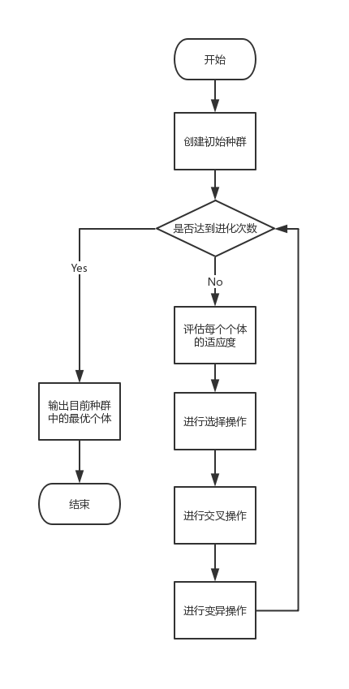
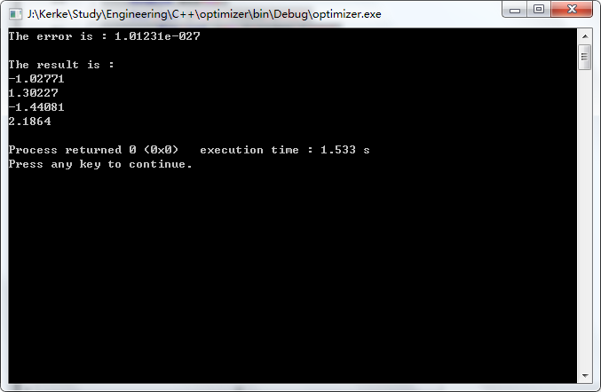

要求
基于抽象优化类 optimizer，编写自己的派生优化类，实现多元方程未知数计算
实现
最优化算法有许多，像是模拟退火、遗传算法、粒子群算法等等，而我使用的是最优化算法中的遗传算法。
算法原理
遗传算法是一类借鉴生物界的进化规律演化而来的随机化搜索方法。其主要特点是直接对结构对象进行操作，不存在求导和函数连续性的限定；具有内在的隐并行性和更好的全局寻优能力；采用概率化的寻优方法，能自动获取和指导优化的搜索空间，自适应地调整搜索方向，不需要确定的规则。
在理解遗传算法的基本原理之前，先了解一下几个概念：
- 个体：一个个体就是一组可能解。将可能解通过编码产生一组数组，即个体的染色体。
- 种群：个体的集合。
- 适应度：度量某个物种对于生存环境的适应程度。
- 选择：产生一代新的子种群后，基于个体的适应度对种群里的个体进行优胜劣汰。
- 交叉：以一定的概率将一对染色体的某一段基因进行交换。
- 变异：以一定的概率使染色体的某一基因发生改变。
于是我们对每一代父种群的染色体进行筛选、交叉和变异操作，产生下一代子种群。通过种群的不断遗传与淘汰，最终能够进化出最优解。在算法初始阶段，我们首先随机创建一个包含多个个体的种群，然后对于这个种群，循环进行以下操作，直到完成设置的进化次数：
- 评估每条染色体所对应个体的适应度。
- 遵照适应度越高，选择概率越大的原则，从种群中选择两个个体作为
父方和母方。 - 抽取父母双方的染色体，进行交叉，产生子代。
- 对子代的染色体进行变异。

我讲的还是比较简略的，详情请见这篇博客
代码
编码：这份代码中以一组x解为一个个体。
选择函数：轮盘度选择
轮盘赌选择（Roulette Wheel Selection）：是一种回放式随机采样方法。每个个体进入下一代的概率等于它的适应度值与整个种群中个体适应度值和的比例。选择误差较大。
交叉方式：单点交叉
单点交叉（One-point Crossover）：指在个体编码串中只随机设置一个交叉点，然后再该点相互交换两个配对个体的部分染色体。
变异方式：基因以一定概率在±Xrn的领域内浮动，Xrn以类似退火的方式减小。
个体类头文件1
2
3
4
5
6
7
8
9
10
11
12
13
14
15
16
17
18
19
20
21
22
23
24
25
26
27
28
29
30
31
32
33
34
35
36
37
38
39
40
41
42
43
44
45
46
47
48
49
50
51
52
53
54
55
56
57
58
59
60
61
62
63
64
65
66
67
68
69
70
71
72
using namespace std;
/**
* 个体类
*/
static int cnt=0;
//模板函数，用于生成各种区间上的数据类型
template<typename T>
T randT(T Lower, T Upper)
{
return rand() / (double)RAND_MAX *(Upper - Lower) + Lower;
}
class SpeciesIndividual
{
public:
double *genes;//基因序列
double error;//误差
double fitness;//适应度
double rate;
int xnum;
//构造函数
SpeciesIndividual(){}
SpeciesIndividual(int xd){
xnum=xd;
genes=new double[xnum];
fitness=0.0f;
error=0.0f;
rate=0.0f;
createByRandomGenes();
}
~SpeciesIndividual(){
delete[] genes;
}
//初始物种基因（随机） 基因直接用x序列编码
void createByRandomGenes(){
for(int i=0;i<xnum;i++){
genes[i]=randT(Xl,Xr);
}
}
//void createByGreedyGenes();//初始物种基因（贪心）
SpeciesIndividual &operator = (SpeciesIndividual const &species){
xnum=species.xnum;
double *genestmp=new double[species.xnum];
for(int i=0;i<xnum;i++){
genestmp[i]=species.genes[i];
}
error=species.error;
fitness=species.fitness;
rate=species.rate;
delete[] genes;
genes=genestmp;
return *this;
}
bool operator == (SpeciesIndividual const &species){
for(int i=0;i<xnum;i++)
if(genes[i]!=species.genes[i])return false;
return true;
}
};
优化程序1
2
3
4
5
6
7
8
9
10
11
12
13
14
15
16
17
18
19
20
21
22
23
24
25
26
27
28
29
30
31
32
33
34
35
36
37
38
39
40
41
42
43
44
45
46
47
48
49
50
51
52
53
54
55
56
57
58
59
60
61
62
63
64
65
66
67
68
69
70
71
72
73
74
75
76
77
78
79
80
81
82
83
84
85
86
87
88
89
90
91
92
93
94
95
96
97
98
99
100
101
102
103
104
105
106
107
108
109
110
111
112
113
114
115
116
117
118
119
120
121
122
123
124
125
126
127
128
129
130
131
132
133
134
135
136
137
138
139
140
141
142
143
144
145
146
147
148
149
150
151
152
153
154
155
156
157
158
159
160
161
162
163
164
165
166
167
168
169
170
171
172
173
174
175
176
177
178
179
180
181
182
183
184
185
186
187
188
189
190
191
192
193
194
195
using namespace std;
SpeciesIndividual population[SPECIES_MAXNUM];//父种群
SpeciesIndividual subPopulation[SPECIES_MAXNUM];//子种群
int speciesNum=0;//父种群个体数量
int subSpeciesNum=0;//子种群个体数量
double Temp=1;
/**
* 遗传算法
* 包含：
* 1.run 开始跑算法
* 2.createBeginningSpecies 创建种群
* 3.calRate 计算每一种物种被选中的概率
* 4.select 轮盘策略 选择适应度高的物种
* 5.crossover 染色体交叉
* 6.mutate 染色体变异
* 7.getBest 获得适应度最大的物种
*/
class opt1: public optimizer
{
public:
template<typename T>
void Swap(T &a,T &b){
T tmp=a;
a=b;
b=tmp;
}
SpeciesIndividual getBest(){
double error=oo;
SpeciesIndividual bestSpecies(xd);
for(int i=0;i<speciesNum;i++){
if(error>population[i].error){
bestSpecies=population[i];
error=bestSpecies.error;
}
}
return bestSpecies;
}
//创建初始种群
void createBeginningSpecies(){
int randNum=SPECIES_NUM;
speciesNum=0;
for(int i=0;i<randNum;i++){
SpeciesIndividual species(xd);
population[speciesNum++]=species;
}
}
//计算每一物种被选中的概率
void calcRate(){
//计算总误差
double totalERR=0.0f;
for(int i=0;i<speciesNum;i++){
population[i].error=fun(population[i].genes,y);//计算误差
totalERR+=population[i].error;
}
//计算总适应度
double totalfitness=0.0f;
for(int i=0;i<speciesNum;i++){
population[i].fitness=totalERR/population[i].error;//计算适应度
totalfitness+=population[i].fitness;
}
//计算选中概率
for(int i=0;i<speciesNum;i++){
population[i].rate=population[i].fitness/totalfitness;
}
}
//选择优秀物种（轮盘赌）
void select(){
//找出最大适应度物种
SpeciesIndividual talentSpecies=getBest();
//将最大适应度物种复制talentNum个
int talentNum=(int)(speciesNum/4)+1;
for(int i=0;i<talentNum;i++){
//复制物种至子种群中
subPopulation[subSpeciesNum++]=talentSpecies;
}
//轮盘赌list.speciesNum-talentNum次
int randNum=speciesNum-talentNum;
for(int i=0;i<randNum;i++){
double rate=randT(0.0,1.0);
for(int j=0;j<speciesNum;j++){
//如果不是最后一个，那么遇到最优个体或者指针没在该区域停下
if((rate-population[j].rate>0||population[j]==talentSpecies)&&j!=speciesNum-1){
rate=rate-population[j].rate;
}
else{
subPopulation[subSpeciesNum++]=population[j];
break;
}
}
}
//子代成长为父种群
for(int i=0;i<subSpeciesNum;i++){
population[i]=subPopulation[i];
}
speciesNum=subSpeciesNum;
subSpeciesNum=0;
}
void crossover(){
//两两配对
for(int i=0;i<speciesNum;i+=2){
if(i+1==speciesNum)break;//若个体数量为奇数，则最后一个个体为单身
//以概率pcl~pch进行
double rate=randT(0.0,1.0);
if(rate>pcl&&rate<pch){
//单点交叉
int begin=rand()%xd;
//取第i个个体和第i+1个个体进行交叉，形成新的两个染色体
for(int j=begin;j<xd;j++){
Swap(population[i].genes[j],population[i+1].genes[j]);
}
}
}
}
void mutate(){
//每一物种都有变异的机会，以概率pm进行
for(int i=0;i<speciesNum;i++){
for(int j=0;j<xd;j++){
double rate=randT(0.0,1.0);
if(rate<pm){
//基因变异在±Xrn的领域内浮动。
double x=population[i].genes[j];
population[i].genes[j]+=randT(Xl/exp(Temp),Xr/exp(Temp));
}
}
}
}
double setOptimizer(double (*foo)(double *,double *),double *x1,double *y1,int xd1,int yd1)
{
fun=foo;
x=x1;
y=y1;
xd=xd1;
yd=yd1;
//随机种子
srand(time(NULL));
//开始遗传算法（选择算子、交叉算子、变异算子）
//创建初始种群
createBeginningSpecies();
for(int i=0;i<DEVELOP_NUM;i++){
//计算适应度
calcRate();
//目前最优解
SpeciesIndividual bestAns=getBest();
if(fun(x1,y)>fun(bestAns.genes,y)){
for(int i=0;i<xd;i++){
x1[i]=bestAns.genes[i];
}
}
//选择
select();
//交叉
crossover();
//变异
mutate();
//缩小基因变异的范围
Temp+=0.01;
}
calcRate();
return fun(x1,y);
};
};
测试代码1
2
3
4
5
6
7
8
9
10
11
12
13
14
15
16
17
18
19
20
21
22
23
24
25
26
27
28
29
30
31
32
33
34
35
36
37
38
39
40
41
42
43
44
45
46
47
48
49
50
51
52
53
54
55
56
57
58
59
60
61
62
using namespace std;
class Matrix_4x4
{
public:
int **mat;
Matrix_4x4(){};
Matrix_4x4(int (&a)[4][4]){
mat=new int *[4];
for(int i=0;i<4;i++){
mat[i]= new int[4];
for(int j=0;j<4;j++){
mat[i][j]=a[i][j];
}
}
}
~Matrix_4x4()
{
for (int i=0;i<4;i++)
{
delete[] mat[i];
mat[i]=NULL;
}
delete[] mat;
}
int* operator[](int idx)
{
return mat[idx];
}
};
double f1(double *x,double *y){
int index=4;
int m[4][4]={{1,2,3,4},{2,4,7,5},{6,7,3,2},{1,8,4,2}};
Matrix_4x4 A(m);
//计算误差
double temp[4]={0};
double err=0;
for(int i=0;i<index;i++){
for(int j=0;j<index;j++){
temp[i]+=1.0*A[i][j]*x[j];
}
err+=(y[i]-temp[i])*(y[i]-temp[i]);
}
//for(int i=0;i<4;i++)cout<<x[i]<<" ";
//cout<<endl;
//cout<<err<<endl;
return err;
}
int main(){
double x[4]={};
double y[4]={6,4,3,8};
opt1 opti;
optimizer *opt=&opti;
cout<<"The error is : "<<opt->setOptimizer(f1,x,y,4,4)<<endl;
cout<<endl<<"The result is : "<<endl;
for(int i=0;i<4;i++)cout<<x[i]<<endl;
return 0;
}
运行结果

结语
通过本次实验，让我很好地了解了几种最优化算法，并且深入了解了其中的遗传算法。
实验过程中，我在如何提升结果精度上花费一些功夫，并且最终借鉴模拟退火中的一些思路，将结果优化至满意的结果。